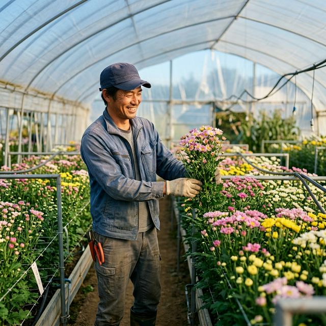

For New Farmers / 生産者・就農希望の方へ
部会がサポートする、豊かな農業のかたち。
System / 部会でできること
それがJAひまわりスプレーマム部会の強みです。
部会に参加すれば、自分でゼロから販路を開拓する必要はありません。栽培技術と土づくりにしっかりと時間を使うことができます。
先輩農家や専門の指導員からの手厚い技術サポート。目揃え会や研修会で、常に最新の知見と栽培の悩みを共有します。
49名の部会員が互いに支え合うおおらかな環境。豊川の土地で、同じ花を育てる仲間がいつもそばにいます。
Workflow & Growth / スプレーマムができるまで
苗づくりから収穫まで、ていねいな手作業の積み重ねです。
スプレーマムの穂木(芽)を摘みます。この小さな芽がいずれ美しい花になります。
摘んだ穂木を土に挿します。しっかりと発根するまで約2週間ほどかかります。
十分に発根した苗を、きれいに整えた畑（ハウス内）に植え付けていきます。
鎌を使って、見事に開花したスプレーマムを一本一本ていねいに収穫します。
※品種や季節により日数は変動します。
Support / はじめやすい環境
関係機関が連携して就農をバックアップ。
〜将来、就農を考えている方へ〜
「まずは実際の現場を見てみたい、体験してみたい」という方向けに、就農体験を実施しています。JAひまわり、JAあいち経済連、愛知県東三河農林水産事務所農業改良普及課が連携し、安心して参加できる体制を整えています。
※詳細・お申し込みは本ページ下部をご覧ください。
先輩農家のもとで、実際の土や花に触れながら実地研修が可能。栽培のノウハウだけでなく、農家としての暮らし方も学べます。
パイプハウスや灌水設備などの初期投資についても、適切な補助制度の案内や、中古ハウス活用のアドバイスを行っています。
Voices / 先輩農家の声
最初は不安でしたが、部会のサポートがあったからこそ今があります。共選共販なので、良い土をつくり、良い花を育てることだけに集中できるのが最大のメリットです。
異業種からの転身でした。技術指導が手厚く、わからないことは先輩にすぐ聞けるあたたかい環境です。豊川の自然の中で働く日々に、とても充実感を感じています。
農業体験への参加、または就農に関するご相談は
お気軽にご連絡ください。